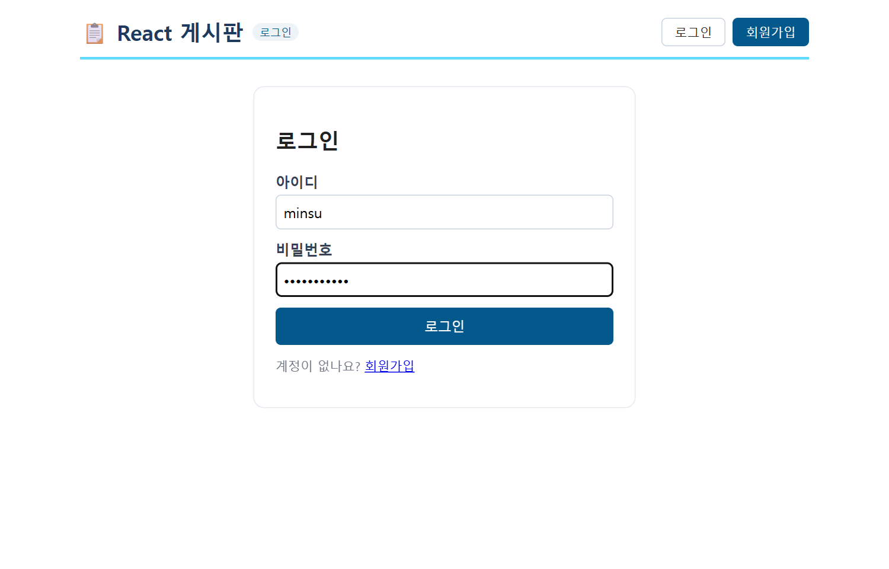
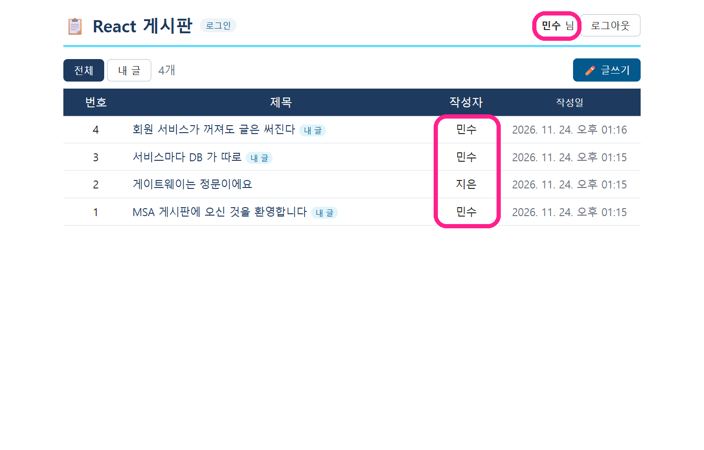
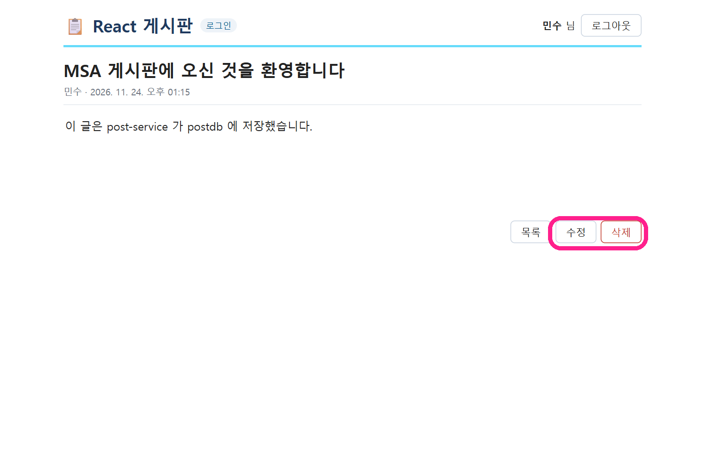
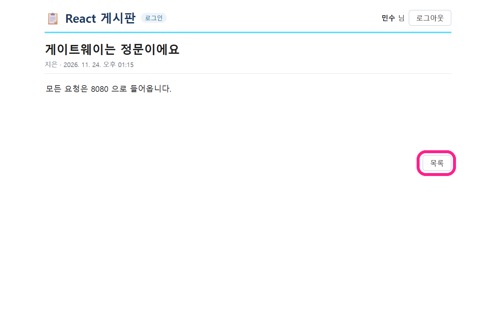
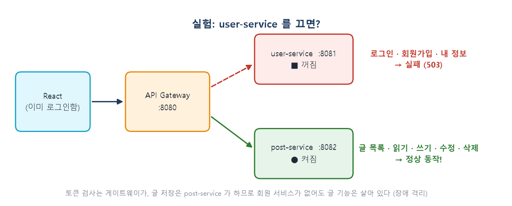
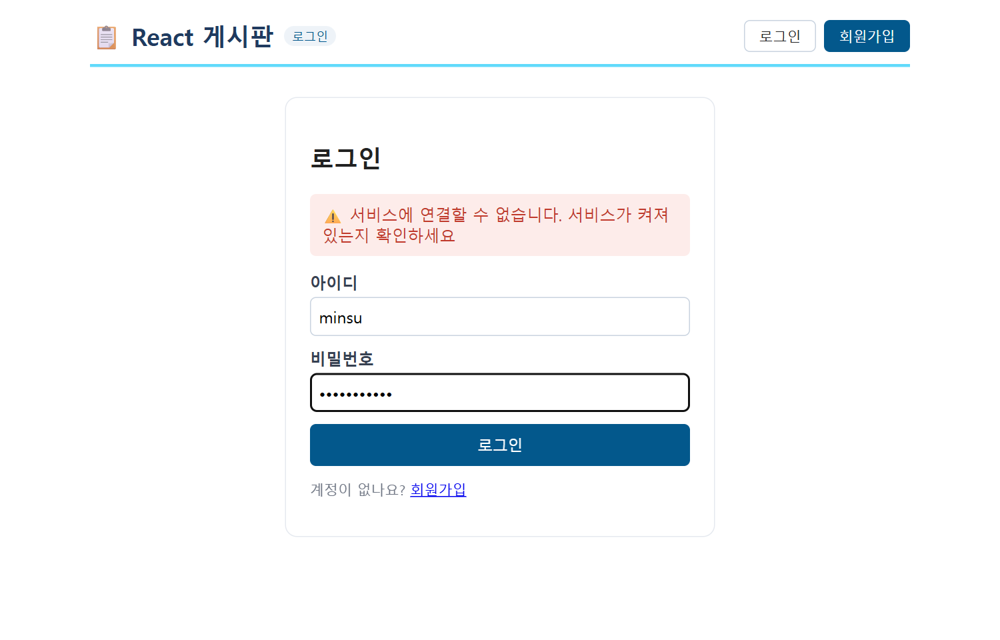

7장. 전체 실행, React 연결, 장애 실험
학습 목표
- DB → 서비스 → 게이트웨이 → React 순서로 전체를 켠다.
- React 화면과 PowerShell 로 가입·로그인·글 CRUD·401·403 을 확인한다.
- 서비스 하나를 꺼 보며 장애 격리를 직접 확인한다.
7-1. 켜는 순서
| 순서 | 무엇을 | 어떻게 | 확인 |
|---|---|---|---|
| 1 | DB | docker compose up -d (저장소 폴더) |
docker compose ps → healthy |
| 2 | user-service | IntelliJ UserServiceApplication ▶ |
Started UserServiceApplication |
| 3 | post-service | IntelliJ PostServiceApplication ▶ |
Started PostServiceApplication |
| 4 | api-gateway | IntelliJ GatewayApplication ▶ |
Started GatewayApplication |
| 5 | React | 아래 명령 | http://localhost:5173 |
2·3·4 는 순서가 바뀌어도 괜찮다. 서비스끼리 켜질 때 서로를 부르지 않기 때문이다. 다만 DB 는 먼저 켜야 한다. user-service 와 post-service 가 켜지면서 DB 에 접속하기 때문이다.
[PS] React - 처음 한 번만 npm install
cd C:\study\react-spring-mas-postgresql\frontend # React 폴더 (backend 가 아니다)
npm install # 처음 한 번만: package.json 에 적힌 라이브러리(React 등)를 node_modules 폴더로 받는다 (1~2분)
# npm run dev : package.json 의 scripts 에 적힌 "dev" 명령(vite)을 실행 → 개발 서버 http://localhost:5173
# 코드를 고쳐 저장하면 브라우저가 저절로 바뀐다. 끌 때는 Ctrl+C
npm run dev
[MSA 개념] React 코드는 React 심화 과정과 같다.
frontend/src/api.js의API_URL은 여전히http://localhost:8080/api다. 그 뒤에 서버가 몇 개로 나뉘었는지 React 는 모른다. 바뀐 것은 주석 몇 줄뿐이다.
7-2. React 로 확인하기
http://localhost:5173 을 연다. 처음에는 글이 없다. 회원가입으로 minsu(민수)와 jieun(지은) 두 사람을 만들고(비밀번호는 둘 다 password123), 각자 로그인해서 글을 몇 개 써 보자. 4장에서 minsu 를 이미 만들었다면 jieun 만 가입하고, minsu 는 로그인만 한다. 두 사람 모두 글을 하나 이상 써 두어야 7-3 의 "남의 글 삭제" 를 해 볼 수 있다.





화면은 React 심화 과정과 똑같다. 하지만 요청 하나하나가 이렇게 흘러간다.
| 화면에서 한 일 | 게이트웨이 | 도착한 서비스 | DB |
|---|---|---|---|
| 목록 보기 | 토큰 없어도 통과 | post-service | postdb |
| 로그인 | 통과 | user-service | userdb |
머리글의 "민수 님" (/api/auth/me) |
토큰 검사 → X-User-Id |
user-service | userdb |
| 글쓰기 | 토큰 검사 → X-User-Id, X-User-Nickname |
post-service | postdb |
| 남의 글 삭제 (직접 요청) | 토큰 검사 통과 | post-service → 403 | postdb |
7-3. PowerShell 로 확인하기
화면 단추로는 해 볼 수 없는 요청(남의 글 삭제, 헤더 위조)도 직접 보내 보자. 모든 요청은 8080(게이트웨이) 으로 보낸다. 아래 결과의 번호(id)는 예시다. 글을 몇 개 썼는지에 따라 내 화면과 다를 수 있다.
[PS] 먼저 오류 응답을 보기 좋게 찍어 주는 함수를 만든다. (4장에서 만든 것과 같다. PowerShell 창을 새로 열었다면 다시 붙여 넣는다)
# 오류가 나면 "상태코드 {"detail": "..."}" 모양으로 보여 주는 함수
function Show-Error($err) { # $err: catch 에서 받은 오류 ($_)
# PowerShell 7 은 응답 본문을 ErrorDetails 에 넣어 준다
if ($err.ErrorDetails.Message) { $body = $err.ErrorDetails.Message }
else {
# Windows PowerShell 5.1 은 응답 스트림을 직접 UTF-8 로 읽어야 한글이 깨지지 않는다
$reader = New-Object System.IO.StreamReader($err.Exception.Response.GetResponseStream(), [System.Text.Encoding]::UTF8)
$body = $reader.ReadToEnd()
}
"$([int]$err.Exception.Response.StatusCode) $body" # 예: 401 {"detail":"로그인이 필요합니다"}
}
$api = "http://localhost:8080/api" # 모든 요청은 게이트웨이(8080)로 보낸다
[PS] ① 로그인해서 토큰 받기 (7-2 에서 만든 minsu 계정)
# -Method Post : 요청 방식 (생략하면 Get). -Uri : 주소. -Body : 보낼 JSON 글. -ContentType : "보내는 글은 JSON 이다" 라는 표시
# charset=utf-8 까지 적어야 Windows PowerShell 에서 한글이 깨지지 않는다
# $login = ... : 응답(access_token, user)을 변수 $login 에 담아 두고 아래에서 꺼내 쓴다
$login = Invoke-RestMethod -Method Post -Uri "$api/auth/login" -ContentType "application/json; charset=utf-8" -Body '{"username":"minsu","password":"password123"}'
$login.user # 로그인한 사람 정보 (id, username, nickname)
# 다음 요청마다 붙일 헤더: Authorization: Bearer <토큰>
$headers = @{ Authorization = "Bearer " + $login.access_token }
id username nickname
-- -------- --------
1 minsu 민수
[PS] ② 글쓰기 - 작성자는 토큰 주인(민수)
# 토큰을 붙여 글쓰기 → 게이트웨이가 토큰을 확인하고 X-User-Id, X-User-Nickname 을 붙여 post-service 로 보낸다
$post = Invoke-RestMethod -Method Post -Uri "$api/posts" -Headers $headers -ContentType "application/json; charset=utf-8" -Body '{"title":"파워셸로 쓴 글","content":"게이트웨이 통과"}'
$post # 저장된 글 - writer 가 민수다 (Body 에 writer 를 보내지 않았는데도)
id : 4
user_id : 1
writer : 민수
title : 파워셸로 쓴 글
content : 게이트웨이 통과
...
[PS] ③ 헤더 위조 - 토큰 없이 X-User-Id: 1 만 적어 보내기
# 토큰 없이 X-User-Id 만 직접 적어 보내기 → 게이트웨이가 401 로 막아야 한다
try { Invoke-RestMethod -Method Post -Uri "$api/posts" -ContentType "application/json; charset=utf-8" -Body '{"title":"x"}' -Headers @{ "X-User-Id" = "1" } } catch { Show-Error $_ }
401 {"detail":"로그인이 필요합니다"}
게이트웨이가 손님이 보낸 X-User-Id 를 지우고, 토큰이 없으니 401 로 돌려보냈다. (6장 AuthFilter ①, ③)
[PS] ④ 남의 글 삭제 - 목록에서 민수가 쓰지 않은 글(지은의 글)을 하나 골라 지워 본다
# 글 목록에서 user_id 가 내 번호가 아닌 글 하나 고르기
# | Where-Object { 조건 } : 앞의 결과 중 조건이 맞는 것만 남긴다 ($_ = 글 하나, -ne = 같지 않다)
# | Select-Object -First 1 : 그중 첫 번째 하나만
$other = (Invoke-RestMethod "$api/posts") | Where-Object { $_.user_id -ne $login.user.id } | Select-Object -First 1
$other.id, $other.writer # 고른 글의 번호와 작성자 (지은)
# 민수의 토큰으로 지은의 글 삭제 → post-service 가 403 으로 막아야 한다
try { Invoke-RestMethod -Method Delete -Uri "$api/posts/$($other.id)" -Headers $headers } catch { Show-Error $_ }
$other 가 비어 있다면 지은의 글이 없는 것이다. 7-2 로 돌아가 지은으로 글을 하나 쓰고 다시 해 보자.
403 {"detail":"본인이 쓴 글만 수정·삭제할 수 있습니다"}
이번에는 토큰이 올바르니 게이트웨이를 통과했고, post-service 가 글 주인을 비교해 403 을 돌려줬다.
[PS] ⑤ 내 글 삭제
Invoke-RestMethod -Method Delete -Uri "$api/posts/$($post.id)" -Headers $headers # ②에서 쓴 내 글 삭제 → 성공 (아무것도 안 찍히면 정상)
Invoke-RestMethod -Uri "$api/posts" | Format-Table id, user_id, writer, title # | Format-Table 칸이름... : 적은 칸만 표로 보여 준다
PowerShell 에서 한글이 깨진다면 - Windows PowerShell 5.1 은 응답에 글자 코드(charset)가 없으면 한글을 잘못 읽는다. 그래서 두 서비스의
application.yml에spring.servlet.encoding.force-response: true를 넣어application/json;charset=UTF-8로 응답하게 했다. 요청 본문은-ContentType "application/json; charset=utf-8"로 보낸다.
7-4. 데이터는 어디에 있을까
[PS]
docker exec mas-db psql -U postgres -d userdb -c "select id, username, nickname from users" # 회원은 userdb 에
docker exec mas-db psql -U postgres -d postdb -c "select id, user_id, writer, title from posts" # 글은 postdb 에 (user_id·writer 는 복사해 둔 값)
id | username | nickname
----+----------+----------
1 | minsu | 민수
2 | jieun | 지은
id | user_id | writer | title
----+---------+--------+----------------------------------
1 | 1 | 민수 | MSA 게시판에 오신 것을 환영합니다
2 | 2 | 지은 | 게이트웨이는 정문이에요
3 | 1 | 민수 | 서비스마다 DB 가 따로
회원은 userdb, 글은 postdb 에 있다. posts.writer 에 닉네임이 복사되어 있는 것도 보인다.
7-5. 장애 실험 - user-service 를 꺼 보자

React 에서 민수로 로그인한 상태로 둔다. 그리고 IntelliJ 의 서비스(Services) 창(3장 3-5 의 마지막 그림)에서 user-service 만 멈춘다(■).
① 글은 그대로 된다 - 화면 위쪽의 내 글, 전체 단추를 차례로 눌러 목록을 다시 불러오고, 글쓰기로 글을 하나 써 보자. 잘 된다. 토큰 검사는 게이트웨이가, 글 저장은 post-service 가 하므로 user-service 가 없어도 된다. (이때 브라우저 새로고침(F5)은 누르지 않는다. 아래 상자 참고)
F5(새로고침)를 누르면 로그아웃된다 - 왜?
React 앱은 새로 열릴 때 저장해 둔 토큰이 아직 쓸 만한지
GET /api/auth/me로 확인한다(AuthContext.jsx). 이 요청은 user-service 가 받는데, 꺼져 있으니 503 이 오고, React 는 확인에 실패한 토큰을 지우고 로그인 화면으로 보낸다.서버를 나눠도 화면이 어떤 서비스에 기대고 있는지에 따라 장애가 번질 수 있다는 뜻이다. "401 일 때만 토큰을 지우고, 503 처럼 서버가 잠깐 아플 때는 토큰을 남겨 두기" 처럼 React 쪽도 함께 고민해야 한다. (도전 과제로
AuthContext.jsx의.catch를 고쳐 보자)
② 로그인은 안 된다 - 로그아웃하고 다시 로그인해 보자.

[PS] 같은 일을 PowerShell 로 - $headers 에는 7-3 에서 받아 둔 토큰이 들어 있다 (user-service 를 끄기 전에 받은 토큰이라 아직 쓸 수 있다)
# user-service 가 꺼진 상태에서 로그인 → 게이트웨이가 503 을 돌려준다
try { Invoke-RestMethod -Method Post -Uri "$api/auth/login" -ContentType "application/json; charset=utf-8" -Body '{"username":"minsu","password":"password123"}' } catch { Show-Error $_ }
# 미리 받아 둔 토큰으로 글쓰기 → post-service 는 살아 있으니 성공한다 (장애 격리)
Invoke-RestMethod -Method Post -Uri "$api/posts" -Headers $headers -ContentType "application/json; charset=utf-8" -Body '{"title":"회원 서비스가 꺼져도 글은 써진다","content":"장애 격리"}'
503 {"detail":"서비스에 연결할 수 없습니다. 서비스가 켜져 있는지 확인하세요"}
id : 5
user_id : 1
writer : 민수
title : 회원 서비스가 꺼져도 글은 써진다
...
[MSA 개념] 장애 격리(Fault Isolation)
모놀리식이었다면 서버가 하나라서 "회원 기능만 끄기" 가 불가능하고, 서버가 죽으면 전부 멈춘다. MSA 에서는 꺼진 서비스의 기능만 멈추고 나머지는 계속 돈다. 쇼핑몰이라면 "리뷰 서비스가 고장 나도 결제는 된다" 는 뜻이다.
반대로 게이트웨이가 꺼지면 모든 요청이 멈춘다. 정문이 하나뿐이기 때문이다. 그래서 실제 운영에서는 게이트웨이를 여러 대 띄운다.
실험이 끝나면 user-service 를 다시 켠다(▶). 다시 로그인이 된다. 다른 서비스는 다시 켤 필요가 없다.
정리
- 켜는 순서: DB → 서비스들(순서 무관) → 게이트웨이 → React.
- 401 은 게이트웨이, 403 은 post-service 가 돌려준다. 위조한
X-User-Id는 게이트웨이에서 지워진다. - user-service 가 꺼져도 글 기능은 살아 있다(장애 격리). 게이트웨이는 503 으로 이유를 알려 준다.
확인 문제
- user-service 를 끈 상태에서, 이미 로그인한 사람이 글을 쓸 수 있는 이유는?
- 이번에는 post-service 만 끈다. 로그인은 될까? 글 목록은? 직접 해 보고 결과를 적어 보자.
- 게이트웨이를 끄면 어떻게 될까? 실제 운영에서는 이 문제를 어떻게 줄일까?